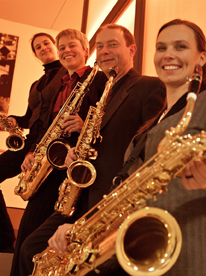
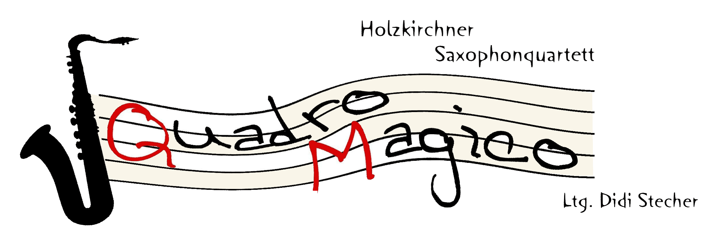
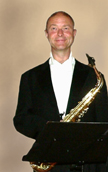
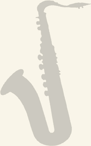
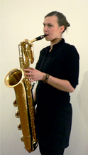
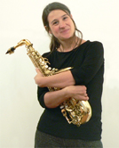
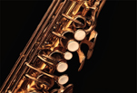
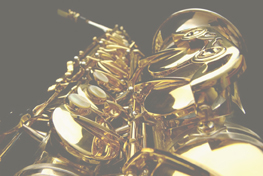
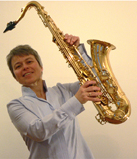

Wir sind ein Ensemble, das unermüdlich und leidenschaftlich an der Erschließung stets neuen Repertoirs arbeitet und dabei ganz eigene, für eine solche Besetzung oft ungewöhnliche Wege beschreitet. Unser größtes Anliegen ist es, uns, wie auch unser Publikum in den magischen Bann einer einzigartigen Klangwelt zu ziehen.
In speziellen Bearbeitungen haben wir alle Musikstücke unseres umfangreichen Programmes uns eigens auf den Leib geschrieben. Dazu gehören Musiken von der Renaissance bis hin zur Moderne aber auch argentinische Tangos, Jazzstandards oder Musical-Melodien.
In den vergangenen Jahren durften wir während vieler Konzerte (in München, Augsburg, Otterfing, Großkarolinenfeld, Holzkirchen, usw.) unser Können und unsere gemeinsamen musikalischen Ensemblegeist unter Beweis stellen.
Besetzung seit 2008:
Didi Stecher - Altsaxophon, Leiter des Ensembles, Arrangements
Gertrud Stecher - Tenorsaxophon
Agnes Reiter - Altsaxophon
Bettina Schloßnikel - Baritonsaxophon






